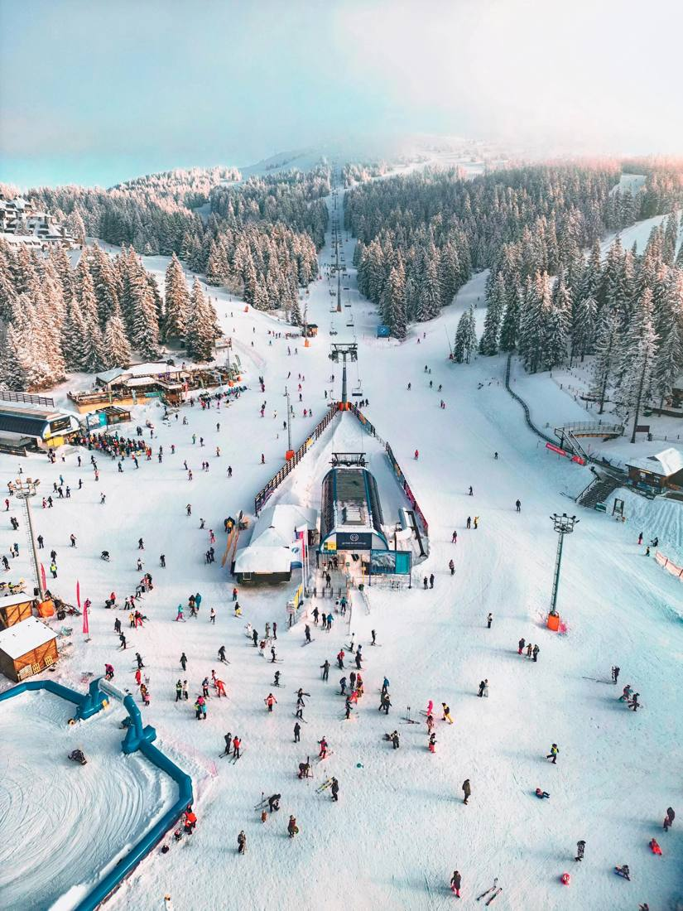
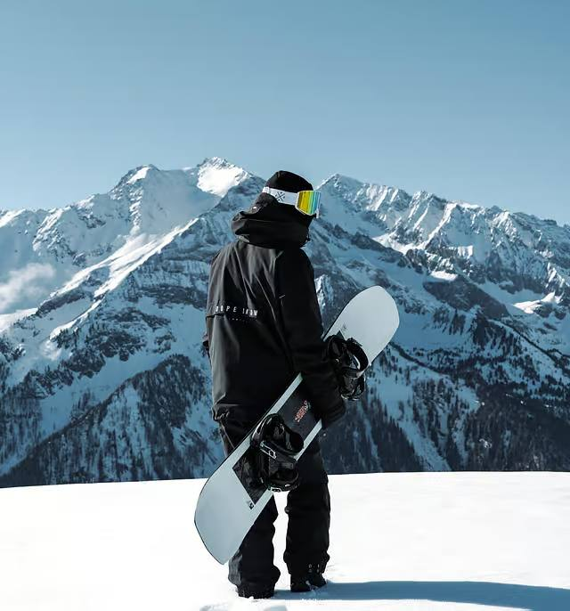
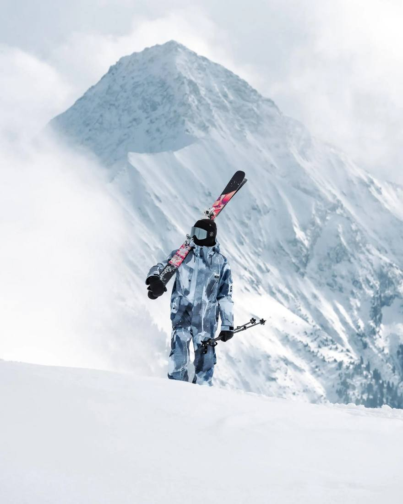
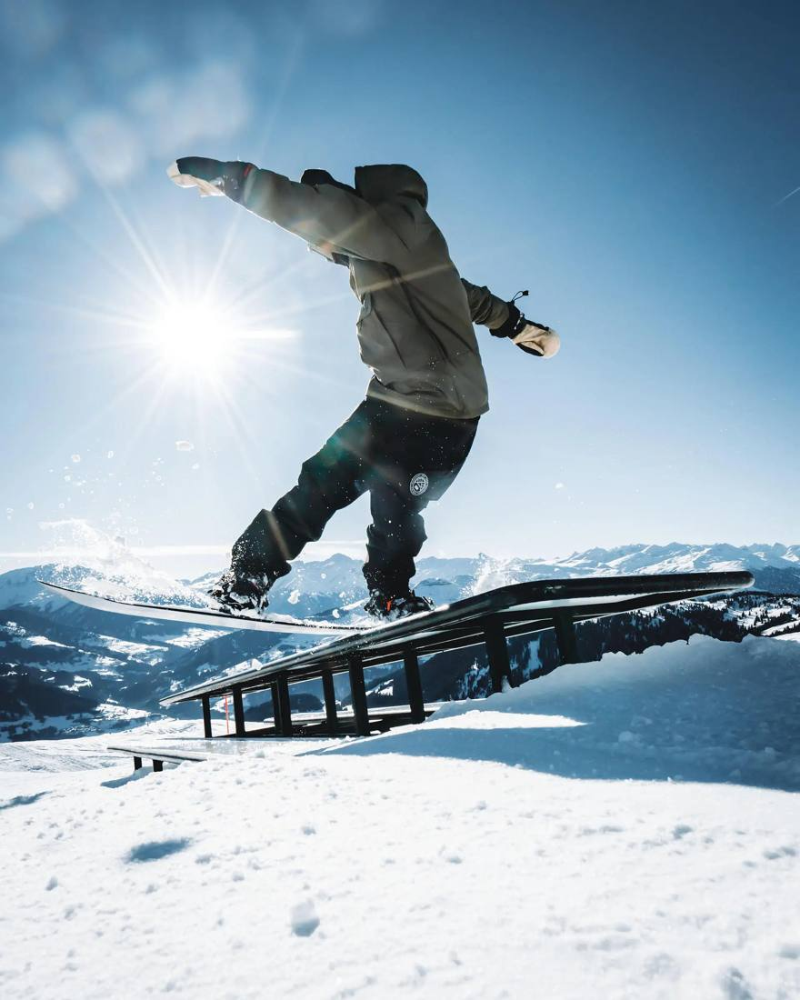
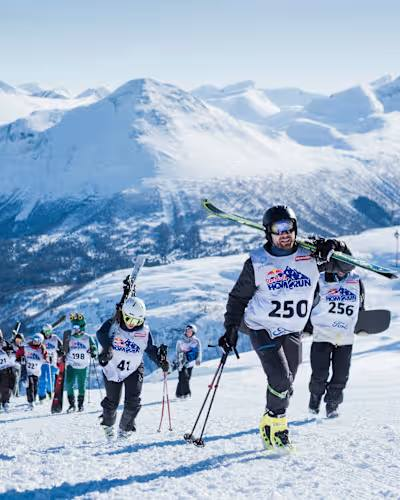

Skijanje ili snowboarding?
Nema pogrešnog izbora, ali početak izgleda drugačije. Izaberi i uporedi.
Dve skije, dva štapa, stabilan početak.
Noge rade nezavisno, pa se već prvog dana možeš kretati, kočiti i skretati bez mnogo padanja. Zato većina škola počinje baš ovde.
- Prvi dan
- Lakši. Plug i prvi skretanja stižu brzo.
- Napredak
- Ravnomeran, uz stalan rad na tehnici.
- Najčešći padovi
- Kolena i ramena. Podešene vezove proveri u servisu.
- Za koga
- Za one koji žele brzo da uživaju na stazi.

Jedna daska, oba stopala vezana.
Prva dva do tri dana su najteža, jer učiš da držiš ravnotežu i ivicu daske. Posle toga napredak često krene brzo, a plutanje u dubokom snegu je posebna priča.
- Prvi dan
- Teži. Dosta sedenja i ustajanja.
- Napredak
- Spor početak, pa nagli skok.
- Najčešći padovi
- Šake, ručni zglobovi i trtica. Nosi štitnike.
- Za koga
- Za one koji vole fluidan, „surferski“ stil.

Freeride, park i takmičenja
Ista planina, potpuno različita iskustva. Većina ljudi na kraju proba sva tri.

Freeride
Van uređenih staza, u netaknutom snegu. Traži znanje o lavinama, pravu opremu i ortake ili vodiča.

Park
Skokovi, šine i kutije. Počni od malih elemenata.

Takmičenja
Na Red Bull Homerun 2025 u Norveškoj učesnici sami nose opremu uzbrdo.
Istorija skijanja i snowboardinga
- Pre hiljade godinaSkijanje nastaje na severu Evrope i Azije kao način putovanja po snegu.
- 1965.Sherman Poppen pravi „Snurfer“, dasku s užetom, kao igračku za decu.
- 1977.Jake Burton Carpenter osniva Burton i razvija prve prave snowboard daske.
- 1998.Snowboarding postaje olimpijski sport na Igrama u Naganu.
Oprema za skijanje i snowboarding
Štikliraj dok pakuješ. Radi isto za skije i za dasku.
0 od 8 spakovano
Skijališta u Srbiji
Skijališta u Srbiji, od najvećih do porodičnih. Pre puta proveri stanje staza i vremensku prognozu.
- Kopaonik
- Stara planina
- Zlatibor
- Divčibare
- Tara
- Goč